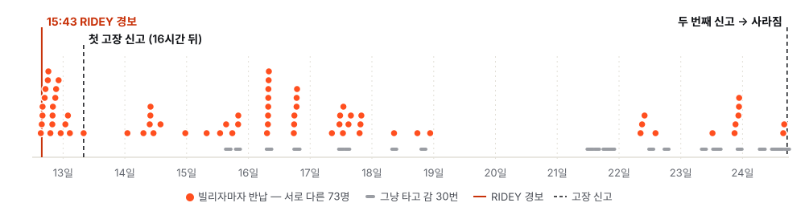
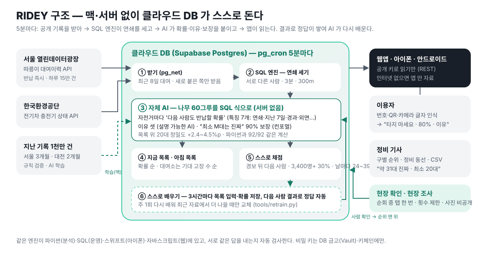
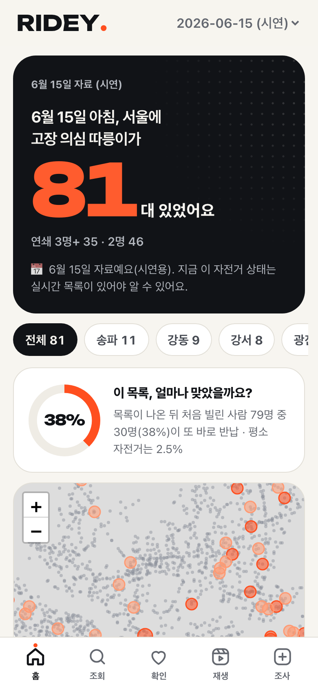
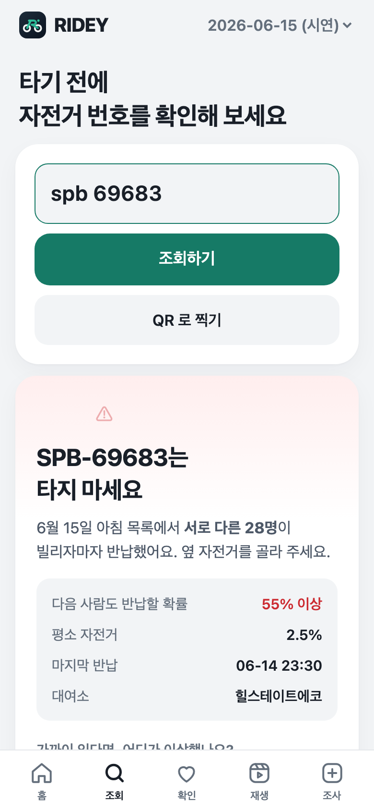
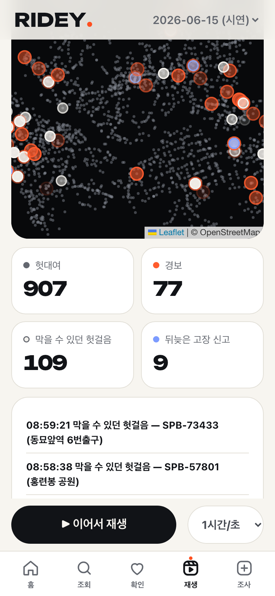
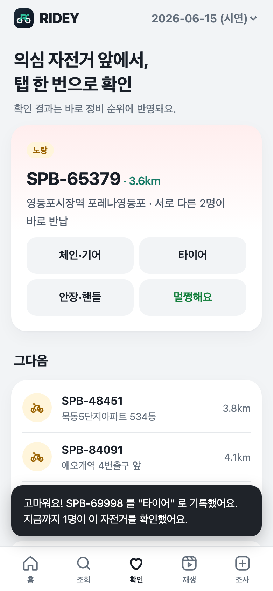

RIDEY
앞사람들의 헛걸음이 고장을 알려 준다
Ready before you ride.
2026 디지털콘텐츠개발대회 · 생활 부문
이 자전거는 12일 동안 73명을 돌려보냈다

두 번째 사람도 바로 반납
— RIDEY 라면 여기서 경보
그런데도 그 뒤 54번 더
빌렸다가 바로 반납
사라짐. 출근길엔
37분 사이 7명이 연달아
두 개의 벽: 신고는 귀찮고, 눈으로는 안 보인다
공단은 하루 한 번 넘게 대여소를 돌며 수거의 절반을 눈으로 찾는다("실제 수거는 신고의 2배쯤"). 하지만 체인·브레이크처럼 타 봐야 아는 고장은 눈으로 못 거른다.
헛대여 = 3분 안에, 300m 도 안 가고, 같은 곳에 반납
한 번은 우연(마음이 바뀜). 서로 다른 사람이 연달아 포기하면 자전거 탓.
- 같은 사람이 다시 빌려 본 것은 한 번으로 (생년·성별, 없으면 "반납 2분 안 재대여")
- 기준은 1월 자료로만 정하고, 3·6월과 대전에 그대로 시험 — 미리 본 데이터에 맞추지 않기

앞선 포기 0명
서로 다른 2명
약 14배. 우연이 아니다.
신고보다 하루 가까이 빠르다
막을 수 있던 헛걸음: 서울 하루 90~243명, 대전 하루 114~132명
대여소 대수로는 안 됐다. 자전거별 기록은 반납 즉시 온다
① 실시간 대여정보는 대여소별 대수만 → "−1 뒤 +1" 깜빡임의 87% 는 남의 평범한 대여·반납, 경보 정밀도 0.2~1.7%. 한때 포기.
② 서울 대여이력 API(tbCycleRentData)는 자전거 번호·대여/반납 시각·대여소를 반납하자마자 준다 (10:59:44 조회에 10:59:45 반납이 이미 있음).
같은 자료인가? 6/15 하루를 둘 다로
| 월별 파일 | API | |
|---|---|---|
| 대여 | 150,827 | 150,830 |
| 헛대여 | 4,085 | 4,087 |
| 다음 날 목록 | 79대 | 79대 (같음) |
→ 파일로 잰 정밀도가 실시간에도 선다. 클라우드 DB 가 5분마다 스스로 경보·채점: 경보 뒤 다음 사람 3,478명 중 1,035명(30%)이 또 반납 (지난 기록 32~34%, 평소 2.5%)

"이 자전거, 다음 사람도 반납할 확률 80% — 이유는 이것"
- 그래디언트 부스팅 60그루를 SQL 식으로 바꿔 DB 가 직접 계산 — 서버 없음, 파이썬과 92/92 같은 답
- 특징 7개: 연쇄·지난 7일 헛대여·경과 시간·외면(그사이 남들이 다른 자전거를 빌려 감) — 경과 시간이 없으면 목록에서 1.5배 크게 잡았다
- 이유를 사람 말로("서로 다른 17명 연달아 +32%p") · 실시간 결과로 스스로 다시 배움(나을 때만 교체)



아침 목록·정비 순위 (6/15 목록 뒤 첫 이용자 79명 중 30명 또 반납) · 번호/QR 조회 → "서로 다른 28명이 바로 반납" · 6/15 하루 재생 (영상: docs/demo/demo.mp4)
현장 확인 → 정비 순위
- 공단 직원은 이미 하루 한 번 이상 대여소를 돈다 — 수거의 절반가량을 신고 없이 눈으로 찾는다
- 그런데 경보 자전거의 82~91% 는 하루 안에 또 빌려진다 — 타 봐야 아는 고장은 순회가 못 거른다
- 의심 자전거 앞에서 "체인·타이어·안장·브레이크·멀쩡함" 한 번 탭 → 확인된 곳이 정비 순위 맨 위 (지나가는 이용자도 가능)
- 정비 기사: 구를 골라 목록·도는 순서·엑셀 CSV
- 고장 종류는 사람이 확인: 평균은 갈리지만(단말기 13초·타이어 37초) 한 대씩 맞히면 10~14% 뿐
현장 조사 (2주, 자전거 150대+): 앱 '현장 조사' 탭으로 진행 예정 — 실시간 자료로 그날 바로 대조

같은 엔진, 다른 곳
- 대전 타슈 — 이미 검증 (정밀도 58.5~60.2%)
- 전기차 충전기 — 2026년 8월 권익위 '전기차 충전' 민원주의보(3년 새 1.8배). 앱엔 '사용 가능' 인데 안 되는 충전기를 같은 방법으로: 연달아 두 번 바로 끊긴 충전기는 다음도 36.5% 끊김(252대), 세 번이면 76% — 평소 2.7%의 약 13배
- 세종 어울링, 창원 누비자 … 대여기록이 공개된 곳 어디든
RIDEY 라면 6월 12일 오후 3시 43분, SPB-69683 은 정비 목록 맨 위에 있었습니다.
그 뒤 71명에게 먼저 알 기회가 있었습니다.
신고를 기다리지 말고, 흔적을 읽자.